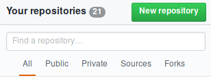

Workshop com
Luís Eduardo G. França
Universidade Federal de Alagoas
luiseduardogfranca@gmail.com
Mobile e Web Apps
É um software desenvovido para dispositvos móveis;
Pode existir o desenvolvimento para diversas plataformas como: Android, iOS, Windows Phone...
Progressive Web App
PWA é uma metodologia de desenvolvimento de software;
Evolução híbrida das aplicações;
Utiliza os recursos ofertaods por navegadores para executar as aplicações.
Híbrido e Nativo
Apps nativos
Acesso às funcionalidades do dispositvo com mais precisão;
Linguagem específica para desenvolvimento;
Limitação de acordo com a versão do dispositvo.
Apps híbridos
São multiplaforma (portabilidade);
Custo baixo para desenvolvimento;
Performance pouco inferior comparado ao app nativo.
"Git is a free and open source distributed version control system designed to handle everything from small to very large projects with speed and efficiency."
Primeiros passos com Git
#Gere uma chave SSH
ssh-keygen -t rsa -C "your comment"
#Crie uma pasta de sua preferência
cd /home/usuario/Documentos/
mkdir MeuProjeto
cd MeuProjeto
#Configure a pasta com o Git
git init
#Crie um arquivo para enviar como parte do projeto
echo "print('Hello World')" >> hello_world.py

Plataforma de hospedagem de código;
Permite o controle de versão de código com o Git;
Permite que os usuários contribuam em outros projetos;
E ofeta também a hospedagem de páginas com o GitHub Pages.
Perfil com todos os repositórios
Enviando o projeto para o GitHub
Crie um novo repositório com o nome do seu projeto
